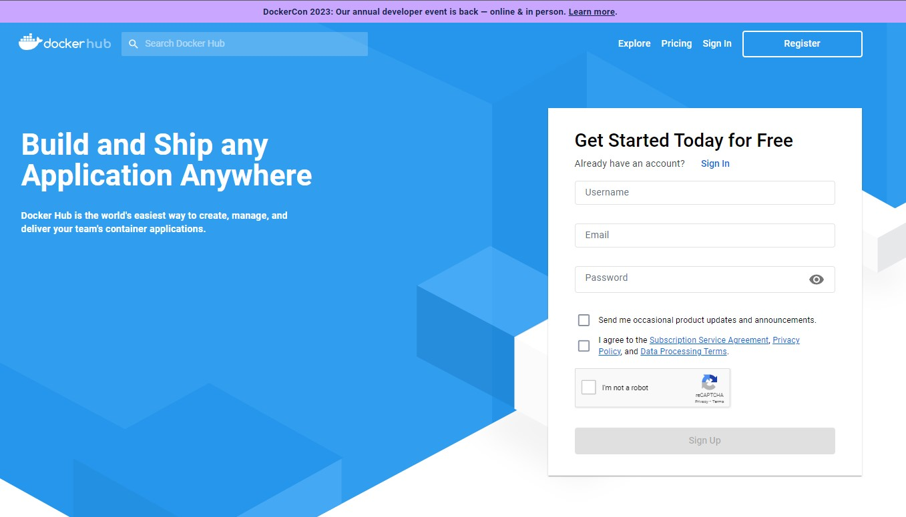

Contents
¿What is Docker?
Docker is a platform that allows you to createm test and deploy applications quickly and efficiently. It utilizes containerization technology to package an application and all its dependencies into a standardized unit called a container.
These containers are isolated and lightweigth, ensuring consistency across various environments, making it easier to deploy and run application seamlessly on different systems.
Docker is a game-changer in the world of software development and deployment. By utilizing multiple threads of processing, it can effectively manage and destribute containers accross different systems, optimizing resource utilization and enhancing overall performance. Moreover, Docker's support
for orchestration tools like Kubernetes enables seamless scaling and management of containers in large-scale production environments. This distributed approach ensures high availability and fault tolerance, making it an ideal choice for modern, containerized applications.
Contents
Getting Started with Docker
- Installing Docker on various operating systems
- Basic Docker CLI commands and usage
- Creating Docker images from Dockerfiles
- Best practices for building efficient and secure images
- Configuring networking for containers
- Creating multi-container applications with Docker Compose
- Persistent data storage in Docker containers
- Managing data volumes and backups
- Leveraging Docker Hub for pre-built images
- Setting up private container registries
- Simplifying multi-container application deployment
- Introduction to Docker Swarm for container orchestration
- Securing Docker containers and images
- Implementing user authentication and role-based access
- Integrating Docker into CI/CD pipelines
- Automating application deployment using Docker
- Integrating Docker into CI/CD pipelines
- Automating application deployment using Docker
How Docker works
Docker works by providing a standard way to run your code. Docker is an operating system for containers. Similar to how a virtual machine vitualizes (removes the need to directly manage) server hardware, containers virtualize the operating system of a server. Docker is installed on each server and provides
simple commands you can use to build, start or stop containers.

Why use Docker
Using Docker lets you ship code faster, standardize application operations, seamlesslu move code and save money by improving resource utilization. With Docker, you get a single object that can reliably run anywhere. Docker's simple and straightforward syntax gives you full control. Wide adoption means there's a robust ecosystem of tools and off-the-shelf applications that are ready to use with Docker.
When to use Docker
You can use Docker containers as a core building block creating modern applications and platforms. Docker makes it easy to build and run distributed microservices architectures, deploy your coude with standardized continuous integration and delivery pipelines, build highly-scalable data processing systems, and create fully-managed
platforms for your developers.
MICROSERVICES
Build and scale distributed application architectures by taking advantage of standardized code deployments using Docker containers.
CONTINUOUS INTEGRATION & DELIVERY
Accelerate application delivery by standardizing environments and removing conflicts between language stacks and versions.
DATA PROCESSING
Provide big data processing as a service. Package data and analytics packages into portable containers that can be executed by non-technical users.
CONTAINERS AS A SERVICE
Build and ship distributed applications with content and infrastructure that is IT-managed and secured.
Install Docker Engine on SO
Installing Docker on Various Operating Systems:
Docker provides straightforward installation procedures for different operating systems, making it accessible to developers across various platforms. Here's a brief overview of the installation steps for popular operating systems:
- Docker is well-supported on most Linux distributions. You can typically install Docker using the package manager specific to your distribution. For example, on Ubuntu, you can use `apt` package manager, while on CentOS, you can use `yum` package manager.
Go Docker Docs.
- On macOS, you can install Docker Desktop, a user-friendly application that includes the Docker Engine, CLI, and a graphical interface. Simply download the Docker Desktop installer from the Docker website and follow the installation wizard.
- For Windows users, Docker Desktop is also available. Docker Desktop provides a seamless experience for running Docker on Windows. Download the installer from the Docker website and run the setup.
For Windows 10 Home or older versions, you can use "Docker Toolbox," an older version of Docker Desktop. Download the installer and follow the installation guide.
Docs Overview - Install Docker Engine

Bash Script Installed Docker On Ubuntu
Script - Install Docker Engine.
#!/bin/bash
# Run the following command to uninstall all conflicting packages
for pkg in docker.io docker-doc docker-compose podman-docker containerd runc; do sudo apt-get remove $pkg; done
# Set up repository
sudo apt-get update
sudo apt-get install ca-certificates curl gnupg
# Add Docker's official GPG key
sudo install -m 0755 -d /etc/apt/keyrings
curl -fsSL https://download.docker.com/linux/ubuntu/gpg | sudo gpg --dearmor -o /etc/apt/keyrings/docker.gpg
sudo chmod a+r /etc/apt/keyrings/docker.gpg
# set up the repository
echo \
"deb [arch="$(dpkg --print-architecture)" signed-by=/etc/apt/keyrings/docker.gpg] https://download.docker.com/linux/ubuntu \
"$(. /etc/os-release && echo "$VERSION_CODENAME")" stable" | \
sudo tee /etc/apt/sources.list.d/docker.list > /dev/null
# Install Docker Engine - Latest
sudo apt-get update
sudo apt-get install docker-ce docker-ce-cli containerd.io docker-buildx-plugin docker-compose-plugin
Basic Docker CLI Commands and Usage:
Once Docker is installed, you can begin working with containers using the Docker CLI. Here are some fundamental commands to get you started:
-
1. `docker --version`: Check the installed Docker version.
-
2. `docker info`: Display system-wide information about Docker.
-
3. `docker pull ‹ image-name ›`: Download a Docker image from Docker Hub or another container registry.
-
4. `docker images [options] `: List all the Docker images available on your system.
-
5. `docker run [options] ‹ image-name ›`: Run a container from a Docker image.
-
6. `docker ps [options] `: List all running containers.
-
7. `docker ps -a`: List all containers, including those that are stopped.
-
8. `docker stop ‹ container-id ›`: Stop a running container.
-
9. `docker start ‹ container-id ›`: Start a stopped container.
-
10. `docker restart ‹ container-id ›`: Restart a running container.
-
11. `docker rm ‹ container-id ›`: Remove a stopped container.
-
12. `docker rmi ‹ image-name ›`: Remove a Docker image from your system.
-
13. docker exec [options] ‹ container-id/container_name › ‹ command ›`: Runs a command iside a runnind container.
Example:
docker exec -it my:container bash
-
14. docker build [options] -t ‹ image_name › ‹ path_to_dockerFile › Builds a Docker image from a Dockerfile.
Example:
docker build -t my_custom_image .
Understanding containerization and its advantages
Containerization is a revolutionary approach to application deployment and management, providing a lightweight and consistent environment for software to run in. Unlike traditional virtualization, where entire virtual machines are used to host applications,
containerization enables us to package an application and all its dependencies into a single, self-sufficient unit known as a container.
Containers isolate applications from the underlying infrastructure, ensuring that they run consistently across different environments, be it a developer's laptop, a testing server, or a production system. This portability eliminates the "it works on my
machine" dilemma and streamlines the development workflow. Moreover, containerization minimizes conflicts between applications and maximizes resource utilization,
making it an efficient solution for deploying multiple services on a single host.With containerization, applications become easily scalable, as additional containers can be spun up or down as demand fluctuates. This elasticity enables rapid response to
changing workloads, leading to better resource management and cost-effectiveness. Additionally, containerization facilitates rapid application deployment, reducing the time between writing code and making it available to end-users. This accelerated development
process gives businesses a competitive edge in today's fast-paced market.
Docker's role in modern Software Development.
At the forefront of the containerization revolution stands Docker, an open-source platform that has become synonymous with containers. Docker provides a user-friendly and robust ecosystem for creating, managing, and deploying containers effortlessly.
By leveraging Docker, developers gain the ability to encapsulate their applications, along with all required libraries and dependencies, into a single Docker image. These images can then be shared, versioned, and reused, promoting collaboration among teams and simplifying the software distribution process.
Moreover, Docker's architecture fosters a microservices-oriented approach to development, allowing applications to be broken down into smaller, modular components. This microservices architecture enhances maintainability, scalability, and fault isolation, enabling teams to work on different parts of an application independently.
Docker's impact extends beyond just the development phase. Its seamless integration with continuous integration and continuous deployment (CI/CD) pipelines streamlines the testing and release processes, ensuring a smooth and reliable delivery pipeline.
In conclusion, Docker's containerization technology is a game-changer for modern software development. By enabling efficient container management, portability, scalability, and rapid deployment, Docker empowers developers and organizations to embrace agility,
reliability, and innovation like never before. Whether you are a seasoned developer or just starting your journey, Docker is a must-have tool in your arsenal for building cutting-edge applications and services.
Building Docker Images
MultiverseGPT: Building Docker images is a crucial aspect of using Docker effectively. Docker images are the building blocks of containers and define the environment and application setup that will be run within containers. Creating Docker images from Dockerfiles is a popular approach, as Dockerfiles provide a declarative way to specify the steps required to build the image. Here's a comprehensive guide to building Docker images and best practices for creating efficient and secure images:
Building Docker Images:
1. Create a Dockerfile: Start by creating a Dockerfile in your project directory. The Dockerfile contains a set of instructions for building the image.2. Choose a Base Image: Select an appropriate base image that suits your application's requirements. Official images from Docker Hub are recommended, as they are regularly maintained and generally more secure.
3. Use Minimal Base Images: Opt for minimal base images like Alpine Linux when possible. These images are smaller, reducing the attack surface and improving image build times.
4. Copy Application Files: Copy only necessary application files into the image. Use the `.dockerignore` file to exclude unnecessary files and directories.
5. Run Commands Wisely: Order the commands in your Dockerfile wisely to leverage caching. Place frequently changing commands (e.g., copying source code) toward the end to maximize build cache reuse.
6. Minimize Layers: Reduce the number of layers in the image. Each command in the Dockerfile creates a new layer. Combine related commands with `&&` to reduce the number of layers.
7. Clean Up Unnecessary Files: Remove unnecessary temporary files and dependencies after installing packages to keep the image size small.
8. Use Specific Tags: Always use specific tags for your base image, like a version number or commit hash. Avoid using "latest" as it can lead to unpredictability.
Creating Docker Images from Dockerfiles.
1. Build the Image: Run the `docker build` command to build the Docker image using the Dockerfile in the current directory.
docker build -t image_name:tag .
2. Tagging Images: After building the image, tag it appropriately for easy identification and version control.
docker tag source_image:source_tag target_image:target_tag
3. Push to Registry (Optional): If you want to share your image with others or use it on multiple machines, push it to a container registry like Docker Hub.
docker push image_name:tag
Best Practices for Building Efficient and Secure Images.
By following these best practices, you can create efficient, secure, and reliable Docker images that provide a solid foundation for your containerized applications.
1. Keep Images Updated: Regularly update your base images and dependencies to incorporate the latest security patches and bug fixes.
2. Scan for Vulnerabilities: Utilize tools like Clair, Trivy, or Docker Security Scan to scan your images for vulnerabilities.
3. Use Official Images: Whenever possible, use official images from reputable sources, as they are well-maintained and frequently updated.
4. Avoid Unnecessary Privileges: Run containers with non-root users whenever possible to limit potential damage from container compromise.
5. Use Multi-Stage Builds: Use multi-stage builds to create smaller and more secure production images by discarding unnecessary build tools used during the build process.
6. Avoid Hardcoding Secrets: Never hardcode sensitive information like passwords or API keys directly into the image. Instead, use environment variables or Docker secrets.
7. Use .dockerignore: Properly configure `.dockerignore` to prevent adding unnecessary files to the image and to reduce its size.
8. Enable Content Trust: Enable Docker Content Trust to verify the authenticity and integrity of images pulled from Docker repositories.
Docker networking: Configuring Networking for Containers
Docker provides various networking options to allow containers to communicate with each other and with external networks. By defaults, Docker sets up a bridge network for each container, providing them with internal IP address. Here are some key networking configurations for containers:
- Bridge Network.
This is the default network created by Docker. Containers within the same bridge network can communicate with each other using their internal IP addresses. Use the '--network' option to especify the bridge network when running containers. - Host Network.
With the '--network=host' option, containers share the host's network stack. This means they can directly access services running in the host's networkm but it also expose the containers on the host's network interfaces. - Overlay Network.
Overlay networks enable communication between containers accross multiple Docker hosts in a swarm cluster. This is essential for distributed applications and scaling. - Macvlan Network.
Macvlan allows containers to have unique MAC addresses, making them apeear as separate physical devices on the network. This is useful when containers need direct access to the physical network. - User-Defined Bridge Network.
You can create custom bridge networks using the 'docker network create' commnad. This allows you to isolate containers on custom networks while enabling communication between them. - Esternal Networking.
Containers can also use the host's network directly or connect to existing external networks, enabling interaction with other devices on the same network.
Creating Multi-Container Applications with Docker Compose
Docker Compose simplifies the management of complex multi-container applicaions, making it easier to develop, deploy and scale them. With a well-defined 'docker-compose.yml' file, you can ensure consistency and reproducibility across different environments. Docker Compose is a tool for defining and running multi-container Docker applications. It uses a YAML file (usually named 'docker-compose.yml') to define the services, networks and volumes requiref for your application. Here's how to create multi-container applications using Docker Compose:
- Install Docker ComposeEnsure you have Docker Compose installed on your system. If not you can download it from the Docker website.
- Write docker-compose.yml Create a 'docker-compose.yml' file in your project directory. Define the services, networks and volumes needed for your application. Specify the images, environment variables, ports and other configurations for each service.
-
Build and Start Run the following command to build and star your multi-container application.
docker-compose up -
Scaling Services Docker Compose allows you to scale services easily. For instance, if you want to run multiple instances of a service, use the --scale' option.
docker-compose up --scale service_name=num_instances -
Stop and Remove To stop and remove the containers created by Docker Compose, use:
docker-compose down - Volumes Define named volumes in your 'docker-compose.yml' to persist data across container restarts.
- Networks Specify custom networkds in the 'docker-compose.yml' file to control the communication netween containers.
Data Management with Docker Volumes: Persistent Data Storage in Docker Containers
In docker, containers are ephemeral, meaning that the data inside them is nor persisted when the container is stopped or removed. However, Docker provides a feature called 'volumes' to handle persistent data storage. Docker volumes allow data to be stored outside the container, ensurinf that ir remains available even after the container is fone or restarted. Here's how you can manage data volumes and achieve persistent data storage in DOcker containers.
Creating Volumes.
You can create a Docker volume using the docker volume create command:
docker volume create volume_name
This will create a named volume that can be used by containers.
Mounting Volumes to Containers.
To make use of a colume in a container, you need to mount it when running the container. Use the '-v' or '--mount' flag to mount the volume.
docker run -d -v volume_name:/path/in/container image_name
or
docker run -d --mount source=volume_name, target=/path/in/container image_name
This mounts the named volume 'volume_name' to the especified path inside the container.
Using Bind Mounts.
Alternatively, you can use bind mounts to map a directory on the hosts to a path in the container.
docker run -d -v /host/path:/path/in/container image_name
This will persist data between the host and the container.
Managing Data Volumes and Backups
Inspecting Volumes
You can list all the volumes on your system using the command:
docker volume ls
To get detailed information ablout a specific volume, use:
docker volume inspect volume_name
Backing up Volumes
Docker does not provide a built-in mechanism for backing up volumes, However, you can manually back up the data stored in the volume by copying it to a safe location on the hosts machine.
For named volumes, you can locate the data on the host by inspecting the volume (using docker volume inspect volume_name ) and findinf the "Mountpoint" property. Copy the data from that directory to a backup location.
For bind mounts, simply create backups of the directories on the host that are mounted into the containers.
Restoring Volumes
To restore a volume, copy the backed-up data back into the appropriate volume directory (for named volumes) or the bind-mounted directory on the host.
Removing Volumes
You can remove a volume using the docker volume rm command:
docker volume rm volume_name
Make sure to back up any important data before removing a volume, as the data will be permanently deleted. By effectively using Docker volumes and managing backups, you can ensure that your containerized applications have access to persistent data and that important data is protected from accidental loss
Docker Hub and Container Registries. Leveraging Docker Hub for Pre-build Images
Docker Hub is a cloud-based registry service provided by Docker, where you can find a vast collection of pre-built Docker images for various software and services. Leveraging Docker Hub can save time and effort, as you can use existing images instad of building them from scratch. Here's how you can make the most of Docker Hub and its pre-build images.
Searching for images

You can search for Docker images on Docker Hub through the DOcker CLI or the Docker Hub website. Use the docker search command to find images related to specific applications or software.
docker search image_name
The command will list all matching images available on Docker Hub, along with their description, start and other relevant information.
Pulling images.
To use a pre-built image from Docker Hub, you need to pull it to your local machine using the docjer pull command.
docker pull image_name:tag
Replace 'image_name' eith the name of the image you want to use and 'tag' with the specific version or tag of the image (ex: latest).
Running Containers with Pulled Images
Once you have pulled an image, you can use it to run containers on your local machine:
docker run -d image_name:tag
This will create and start a container using the specified image.
Setting up Private Container Registries
Docker Hub is a public registry, which means anyone can access and download the images hosted there. However, in some cases, you may want to use private container registries to store and manage your own custom images or sensitive applications. Docker provides the ability to set up private container registries using Docker's "Docker Distribution" (also known as Docker Registry).
Using Docker Registry
Docker Registry is an open-source project that lets you host your private container registry. You can set up your registry on your server or cloud infrastructure, providing secure access and control over your images.
Running a Private Docker Registry
To run your private DOcker Registry, you can use the official Docker image available on Docker Hub.
docker run -d -p 5000:5000 --name registry registry:2
This command starts a private registry on port 5000
Pushing Images to the Private Registry
Once the private registry is up and running, you can push your custom images to it:
docker tag local_image_name:tag your_registry_ip:5000/your_image_name:tag
docker push your_registry_ip:5000/your_image_name:tag
Replace your_registry_ip with the IP address or domain name of your private registry.
Pulling Images from the Private Registry
To pull images from your private registry on other machines, you need to log in first (if authentication is enabled) and then pull the image.
docker login your_registry_ip:5000
docker pull your_registry_ip:5000/your_image_name:tag
Remember to handle authentication and security properly when setting up a private registry, especially when dealing with sensitive data and applications. By using Docker Hub for pre-built images and setting up a private container registry for your custom images, you can enhance the efficiency, security, and flexibility of your Docker-based workflows.
Docker Compose and Orchestration
Docker Compose is a powerful tool for defining and managing multi-container applications. It allows you to specify the services, networks, and volumes required for your application in a single YAML file docker-compose.yml.
With Docker Compose, you can simplify the deployment of complex applications that consist of multiple interconnected containers. Here's how Docker Compose simplifies multi-container application deployment:
-
Single Configuration File:
Docker Compose allows you to define all the services, their configurations, dependencies, and networks in one docker-compose.yml file. This single configuration file ensures consistency and simplifies the deployment process. -
Dependency Management:
You can specify dependencies between services, ensuring that dependent services start before the ones relying on them. This makes it easier to manage the order of container startup, especially in complex application setups. -
Easy Scalability:
Docker Compose makes it straightforward to scale individual services by defining the desired number of replicas for each service. This allows you to scale specific components of your application based on demand. -
Environment Variables and Secrets:
Docker Compose supports environment variables and Docker secrets, allowing you to manage sensitive information and configuration parameters without exposing them in the docker-compose.yml file. -
Simplified Commands:
Docker Compose provides simple commands to manage the entire application, such as starting all services, stopping them, or viewing the logs for all containers. -
Reproducibility and Portability:
With Docker Compose, you can recreate the same application setup in any environment that supports Docker Compose, ensuring reproducibility and portability.
Simplifying multi-container application deployment.
Simplifying multi-container application deployment is a key benefit of using containerization platforms like Docker. With Docker, you can package each component of your application into separate containers, ensuring consistency, portability, and ease of deployment. Here are some steps and best practices to simplify multi-container application deployment.
By following these best practices and leveraging Docker's containerization and orchestration features, you can significantly simplify the deployment of multi-container applications. This approach improves application reliability, enhances development workflows, and facilitates seamless scaling and management of your containerized applications.
1. Containerization
First, containerize each component of your application using Docker. Identify the different services, databases, and other dependencies that make up your application, and create Docker images for each of them. This encapsulation ensures that each component runs consistently across different environments.
2. Use Docker Compose
Docker Compose is an essential tool for simplifying multi-container application deployment. Define your entire application stack, including services, networks, and volumes, in a single `docker-compose.yml` file. This allows you to manage all the services as a single unit and simplifies the deployment process.
3. Version Control
Keep your docker-compose.yml file and Dockerfiles under version control (e.g., Git). This ensures that changes to the application stack and configurations are tracked and can be rolled back if needed. Version control also enables collaboration among team members.
4. Automated Builds
Implement automated build pipelines to create Docker images from your application code and configurations. Tools like Docker Hub, GitHub Actions, or Jenkins can be used to automate the build process, ensuring that you always have the latest, tested, and optimized Docker images ready for deployment.
5. Dependency Management
Utilize Docker Compose's dependency management features to specify the relationships between different services. This ensures that dependent services start before the ones relying on them, simplifying the setup and reducing the risk of errors during deployment.
6. Environment Variables and Secrets
Leverage environment variables and Docker secrets in your `docker-compose.yml` file to manage sensitive information and configurations. This allows you to customize the behavior of your containers without exposing critical data in the YAML file.
7. Modular Architecture
Design your application with a modular architecture, where each component can run independently as a container. This approach allows you to scale, update, and manage individual components without affecting the rest of the application.
8. Configuration Management
Use container orchestration platforms like Docker Swarm or Kubernetes for more complex deployments. These tools provide advanced features for scaling, load balancing, service discovery, and rolling updates, making multi-container application deployment even more straightforward.
9. Continuous Integration/Continuous Deployment (CI/CD)
Integrate Docker deployment into your CI/CD pipeline to automate the process of building, testing, and deploying your application. This ensures that changes are automatically pushed to your environment, reducing the manual effort required for deployment.
Introduction to Docker Swarm for container orchestration
Key Concepts in Docker Swarm
1. Nodes Nodes are the instances that participate in the Docker Swarm cluster. Nodes can be physical machines or virtual machines that have Docker installed and are part of the swarm.
2. Managers and Workers In a Docker Swarm cluster, there are two types of nodes: manager nodes and worker nodes. Manager nodes handle the orchestration and coordination tasks, while worker nodes execute the tasks and run the containers. There can be multiple manager nodes for high availability and fault tolerance.
3. Services A service is a fundamental unit in Docker Swarm and represents the desired state of a containerized application. It defines the number of replicas, the container image, and network settings. Swarm ensures that the desired state is achieved and maintained, even if nodes fail or are added/removed.
4. Stacks Stacks are used to deploy a collection of services, along with any associated networks and volumes. Stacks are defined in a Compose file (similar to Docker Compose), but they are deployed and managed by Swarm.
5. Overlay Networking Swarm supports overlay networking, which allows containers on different nodes to communicate seamlessly without the need for additional configurations. This enables seamless communication across the entire swarm.
6. Load Balancing Swarm provides built-in load balancing for services, distributing incoming traffic among the replicas of a service. This ensures that requests are efficiently processed across the swarm nodes.
Key Features of Docker Swarm
1. Scalability Docker Swarm makes it easy to scale services by specifying the desired number of replicas for each service. Swarm automatically distributes the containers across available worker nodes.
2. High Availability Swarm provides high availability by ensuring that manager nodes are replicated and capable of handling leadership duties. If a manager node becomes unavailable, another manager takes over, preventing single points of failure.
3. Rolling Updates Swarm allows you to perform rolling updates for services, meaning you can update services without any downtime by gradually replacing old containers with new ones.
4. Security and Access Control Swarm supports various security mechanisms, including mutual TLS (Transport Layer Security) authentication between nodes, to secure communication within the cluster. You can also use access control lists (ACLs) to manage user access to the swarm.
5. Integrated Storage Swarm supports volume plugins, enabling you to integrate external storage systems into the swarm cluster. This allows you to store data persistently outside the containers.
6. Built-in Discovery and Service Discovery Swarm provides built-in service discovery, meaning you can refer to services by their names instead of specific IP addresses, making it easier to manage communication between services. Overall, Docker Swarm offers a simple and powerful solution for container orchestration, especially for organizations already using Docker and looking for a built-in, easy-to-use solution for managing containers across a cluster of nodes. It provides the necessary tools to deploy, scale, and manage containerized applications efficiently while maintaining high availability and resilience.
+info.
Docker security best practices
Docker security is crucial to ensure the integrity and safety of your containerized applications and data. By following these best practices, you can minimize potential security risks and enhance the overall security posture of your Docker environment:
2.Update Regularly Keep your Docker host and all images up to date. Regularly update the base images and application dependencies to include the latest security patches and bug fixes.
3.Avoid Unnecessary Privileges Run containers with non-root users whenever possible to limit the potential damage from container compromise. Avoid running containers with unnecessary privileges.
4.Limit Resources Use resource constraints like CPU and memory limits to prevent container abuse and resource exhaustion.
5.Employ Microservices Architecture Break your applications into smaller, isolated services, each running in its own container. This limits the potential impact of a security breach to a specific service.
6.Use Docker Content Trust Enable Docker Content Trust to verify the authenticity and integrity of images pulled from Docker repositories, preventing the use of tampered or malicious images.
7.Scan for Vulnerabilities Utilize vulnerability scanning tools like Trivy or Clair to scan Docker images for known security vulnerabilities before deployment.
8.Implement Network Segmentation Use Docker's networking features to segment containers based on functionality and security requirements. Limit container-to-container communication to only what is necessary.
9.Secure Docker Daemon Socket Protect the Docker daemon socket (usually at `/var/run/docker.sock`) and allow access only to authorized users or applications. Avoid running Docker with the default settings that allow unauthenticated access to the daemon.
10. Protect Sensitive Data Avoid hardcoding sensitive information (e.g., passwords, API keys) directly into the image. Use environment variables or Docker secrets to manage and protect sensitive data.
11. Secure Docker Compose Files Ensure that your Docker Compose files and other configuration files containing sensitive information are appropriately protected and not exposed to unauthorized users.
12. Monitor Container Activity Implement container monitoring and logging to detect suspicious or malicious behavior. Utilize tools like Docker logs, Sysdig, or other monitoring solutions to gain visibility into container activity.
13. Regular Audits and Reviews Conduct regular security audits and code reviews of Docker images, Dockerfiles, and other configuration files to identify and fix potential security issues.
14. Control Image Sources Control the sources of your Docker images, especially for images from external repositories. Avoid using images from unknown or untrusted sources.
15. Secure Image Build Process Ensure that your image build process is secure by using trusted base images and only adding necessary dependencies and packages.
Continuous Integration and Deployment with Docker
Continuous Integration (CI) and Continuous Deployment (CD) with Docker is a powerful approach that streamlines the development, testing, and deployment of containerized applications. Docker's ability to create consistent environments through containerization, combined with CI/CD pipelines, enables teams to deliver software more efficiently and reliably. Here's how you can implement CI/CD with Docker:
Continuous Integration (CI)
1. Version Control: Use a version control system (e.g., Git) to manage your application's source code and Docker-related files (e.g., Dockerfile, docker-compose.yml).
2. Automated Builds: Set up automated build pipelines that trigger whenever changes are pushed to the version control system. CI tools like Jenkins, GitLab CI, or GitHub Actions can be used for this purpose.
3. Building Docker Images: During the CI process, the CI tool should build the Docker images for your application. This involves executing the Docker build command and creating optimized, production-ready images.
4. Unit Testing: As part of the CI process, run automated unit tests within the containers to ensure that the application functions correctly in a containerized environment.
5. Image Scanning: Integrate Docker image scanning tools like Trivy or Clair to check for known security vulnerabilities in the built images.
6. Artifact Storage: Store the built Docker images in a registry, such as Docker Hub or a private container registry. These images will be used for deployment during the CD phase.
Continuous Deployment (CD)
1. Environment Setup: Provision and configure the target deployment environments (e.g., staging and production) using infrastructure-as-code tools like Terraform or Kubernetes.
2. Orchestration: Use container orchestration tools like Kubernetes or Docker Swarm for managing containerized applications across multiple nodes and environments.
3. CD Pipelines: Set up CD pipelines that automatically deploy the Docker images to the target environments based on predefined triggers, such as successful CI builds or specific Git branches/tags.
4. Rolling Updates: Implement rolling updates within the CD pipeline to minimize downtime during deployments. This involves deploying new versions of the application gradually, one at a time, and monitoring the health of the deployment.
5. Health Checks: Utilize health checks within the CD pipeline to ensure that the new containers are healthy and ready to receive traffic before routing traffic to them.
6. Rollback Mechanism: Implement an automated rollback mechanism in case the new version of the application experiences issues or failures.
Monitoring and Logging:
1. Container Monitoring: Implement monitoring and logging for your Docker containers to gain visibility into their performance and health. Tools like Prometheus, Grafana, and Elasticsearch can be used for this purpose.
2. Application Performance Monitoring (APM): Utilize APM tools to monitor the performance and behavior of your application within the containers.
Build a containerized web application with Docker
Package a web app so that it can be deployed as a Docker image and run from an Azure Container instance.
Learning objetives
In this module, you wil:
- Create a Dockerfile for a new container image based on a starter image from Docker Hub.
- Add files to an image using Dockerfile commands.
- Configure an image's startup commnad with Docker image.
- Build and run a web application packaged in a Docker image.
- Deploy a Docker image using the Azure Container Instance service.
Prerequisites.
- Familiarity with basic web application development concepts
- A Docker subscription
- Docker installed on your desktop computer.
- Git installed on your Desktop Computer.
This module is part of these learning paths.
Administer container in Azure and AWS.
Architect modern applications in Cloud
Deploy, manage and monitor Windows containers on Azure Kubernetes Service.
Introduction
Rapid deplotments is key to business agility. Modern organization must be able to release apps quickly to attract and retains business. Containerization saves time and reduce costs. You don't have to configure hardware and spend time installing operating systems and software to host a deployment.
Multiple apps can run in their isolated containers on the same hardware. It's possible to scale out quickly by starting more instances of containers. The images that run in containers are extensible, you can start with a working base image and layer more functionality on top to create a new image.
Suppose you work for an online clothing retailer that's planning the development of a handful of internal apps, but it hasn't yet decided how to host them. You're looking for maximun compatibility, and the apps may be hosted on-premises, in Azure, or another cloud provider. Some of the apps might share IaaS infrastructure.
In these cases, the company requires the apps to be isolated from each other. Apps can share the hardware resources, but an app shouldn't be able to interfere with the files, memory space, or other resources used by other apps. The company values the efficiency of its resources and wants somenthing with a compelling app-development story. Docker seems an idean solution to these requirements.
With Docke, you can quickly build and deploy an app and run it in its tailored enviroment, either locally or in te cloud.
In this module, you'll take an existing application and package it up as a Docker image. You'll automate the image-build process by defining the build steps in a Dockerfile. You'll test the app locally by using Docker for Windows. Finally, you'll upload the image to Azure Container Registry and run the application using the Azure Container Instance service.
By the end of this module, you'll be able to build Docker images and run them from Azure.
Retrieve an existing Docker image and deploy it locally
Docker is a technology that enavles you to deploy applications and services quickly and easily. A Docker app runs using a Docker image. A Docker image is a prepackaged environment containing the application code and the environment in which the code executes.
In the corporate scenario described earlier, you want to investigate the deasibility of packaging and running an app with Docker. You decide to buil and deploy a Docker image running a test web app.
In this unit, you'll learn about the key concepts and processes involved in running a containerized app stored in a Docker image.
Overview of Docker
Docker is a tool for running containerized apps. A containerized app includes the app and the filesystem that makes up the environment in which it sunrs. For example, a containerized app could consist od a database and other associated software and configuration information needed to run the app.
A containerized app typically has a much smaller footprint that a virtual machine configured to run the same app. This smaller footprint is because a virtual machine has to supply the entire operating sstem and associated supporting environment. A Docker container doesn't have this overhead because Docker uses the operating system kernel of the host computer to power the container. Downloading and starting a Docker image is daster and more space-efficient that downloading
and running a virtual machine that provides similar functionality.
You create a containerized apps by building an image that contains a set of files and a section of configuration information Docker uses. You run the app by asking Docker to start a container based on the image. When the container starts, Docker uses the image configuration to determine what application to run inside the container. Docker provides the operating system resources and the necessary security. It ensures that containers are running concurrently and remain relatively isolated.
Important